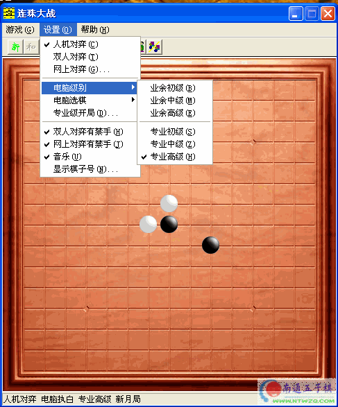
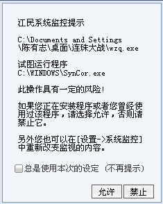

此软件应该是珠珠五子棋【本站已经提供下载】的升级版本。界面有了很大的改观

引用：
原文由 天津刘源 发表于 2007-1-19 4:53:07 :
垃圾有恶意插见

是这个吗？从网上找到该文件的性质如下：
SynCor.exe (SynthCore COM Server) is an executable from the software SynthCore version 3.0.0 by Analog Devices, Inc.. SynCor.exe version 3.0.0 has a file size of 380,928 bytes, and is most commonly found under the directory "SoundMAX Synthesizer" with a creation date of December 31, 2005.
是声卡的驱动，系统自带文件。
 非常感谢
非常感谢